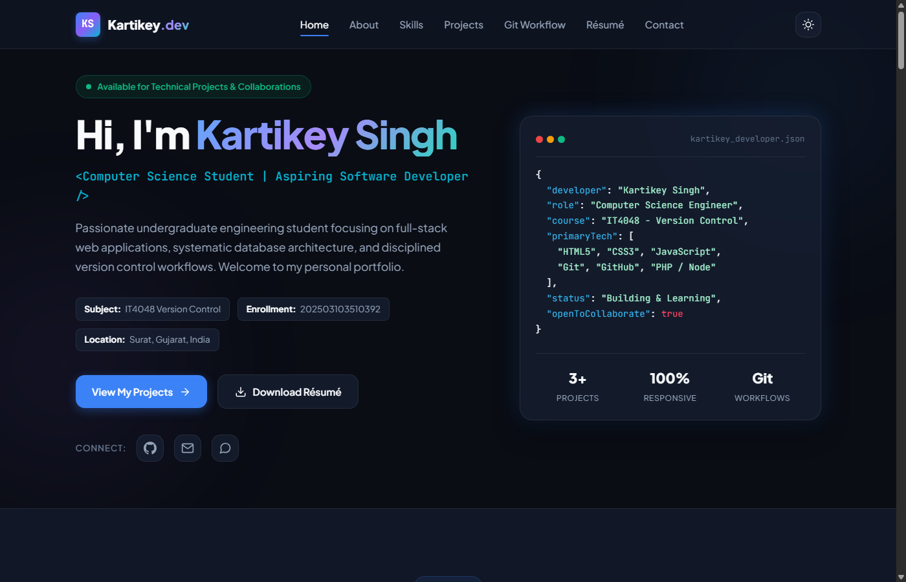
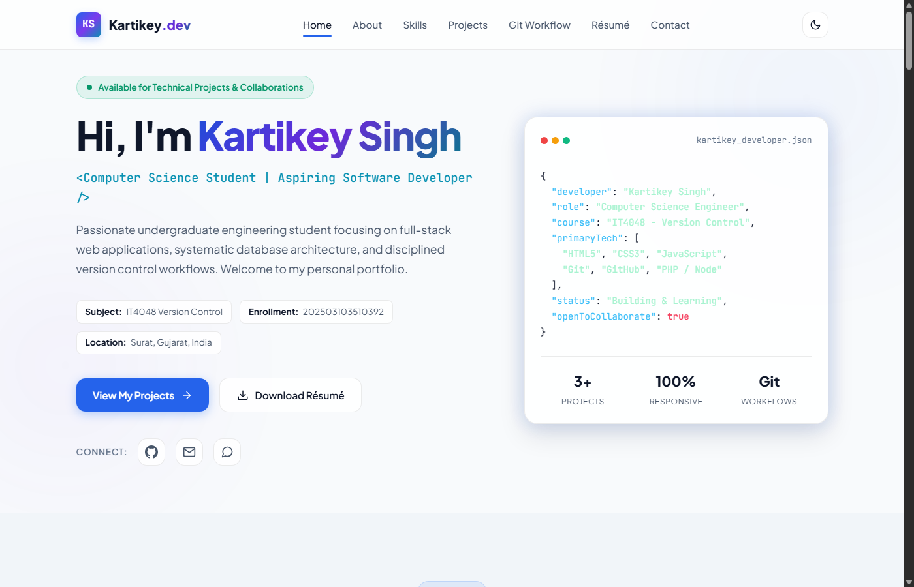
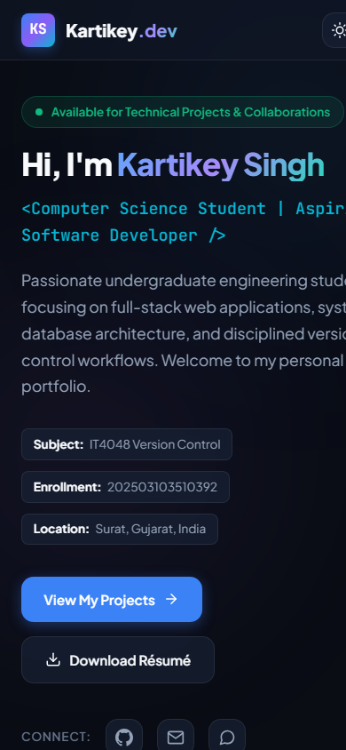

A Responsive, Modern Web Application with Version Control & Continuous Static Deployment
In the modern software engineering landscape, a personal developer portfolio serves as the definitive digital resume and technical identity for aspiring computing professionals. Rather than relying solely on static paper resumes, a well-crafted web portfolio demonstrates practical mastery over core frontend technologies, user experience design principles, responsive web layouts, accessibility standards, and professional version control workflows.
This project, titled Personal Portfolio Website, was designed and implemented as an academic mini-project for the subject IT4048: Version Control with Git and GitHub at Asha M. Tarsadia Institute of Computer Science and Technology (AMTICS). The website provides a modern, fast-loading, and visually captivating presentation of Kartikey Singh's academic profile, technical skill competencies, completed projects, and downloadable curriculum vitae.
The core objectives achieved in this project include:
localStorage persistence.| Category | Technology | Purpose / Role in Project |
|---|---|---|
| Structure | HTML5 | Semantic document architecture (header, nav, main, section, article, footer). |
| Styling | CSS3 | Custom design tokens, CSS Grid, Flexbox, Glassmorphism, animations, print media. |
| Behavior | JavaScript (ES6+) | Theme switcher, mobile navigation drawer, form validation, filter engine, modal dialog. |
| Version Control | Git CLI | Local tracking, branch isolation, staged changes, semantic commits. |
| Hosting & Remote | GitHub & Pages | Remote code synchronization, version backup, and automated static web publishing. |
The repository adheres to a clean, modular directory structure tailored for static web hosting and maintainability:
KartikeySingh_PortfolioWebsite/
├── index.html # Core semantic single-page web document
├── README.md # Comprehensive repository documentation
├── .gitignore # Operating system, editor, and cache filter
├── assets/
│ ├── css/
│ │ └── style.css # Central stylesheet (variables, components, media queries)
│ ├── js/
│ │ └── script.js # Interactive controller & event engine
│ ├── images/
│ │ ├── screenshot_hero_desktop.png
│ │ ├── screenshot_fullpage.png
│ │ ├── screenshot_light_mode.png
│ │ └── screenshot_mobile.png
│ └── resume/
│ ├── resume_template.html # High-resolution print template
│ └── Kartikey_Singh_Resume.pdf# Downloadable vector PDF résumé
└── report/
├── project_report_source.html # Academic report source document
└── GitHub_202503103510392_Kartikey_Singh.pdf
assets/resume/Kartikey_Singh_Resume.pdf.
Version control is the discipline of managing changes to software source code over time. For this mini-project, Git version 2.55 was utilized to track incremental project evolution from ground zero to the final published application.
To ensure professional traceability, commits adhere to the Conventional Commits standard. Every commit clearly specifies its type and scope:
feat(structure): initialize semantic HTML5 portfolio foundationstyle(design): implement dark/light custom property design systemfeat(interactivity): implement theme switcher, mobile drawer, and modal enginefeat(resume): generate vector resume PDF and download assetstest(qa): conduct browser automation, cross-viewport tests, and visual capturedocs(report): compile comprehensive academic report and submission READMEThe project leverages GitHub Pages for continuous static delivery. The deployment workflow operates as follows:
git add) → Semantic Commit (git commit) → Push to GitHub (git push origin main) → GitHub Pages Automated Environment Build → Live HTTPS Distribution at:
https://kartikeysingh-SK.github.io/KartikeySingh_PortfolioWebsite/
| Test Case ID | Feature Tested | Test Action & Input | Expected Result | Status |
|---|---|---|---|---|
| TC-01 | Page Load & HTTP Status | Request root /index.html via local test server. |
HTTP 200 OK, zero syntax or console errors. | PASS |
| TC-02 | Theme Switching | Click theme toggle button (moon/sun). | Attribute data-theme switches, persisted in localStorage. |
PASS |
| TC-03 | Mobile Drawer Navigation | Viewport width 390px, click hamburger icon. | Drawer expands smoothly with accessible aria-expanded state. | PASS |
| TC-04 | Interactive Project Filtering | Click "Full-Stack", "Frontend", "All" filter tabs. | Cards display/hide correctly matching category tags. | PASS |
| TC-05 | Contact Form Validation | Submit form with empty or invalid email address. | Inline error indicators appear, preventing invalid submission. | PASS |
| TC-06 | Mailto Fallback Redirection | Submit valid contact form inputs. | System triggers mailto handler with prefilled subject and body. | PASS |
| TC-07 | Résumé PDF File Availability | Download link assets/resume/Kartikey_Singh_Resume.pdf. |
PDF file downloads successfully; size verified at ~106 KB. | PASS |
| TC-08 | Smooth Scroll & Back-to-Top | Click navigation links and bottom back-to-top button. | Smooth animated scrolling to target IDs without layout shift. | PASS |



The Personal Portfolio Website academic mini-project successfully demonstrates comprehensive mastery of core web technologies (HTML5, CSS3, JavaScript) and industry-standard version control methodologies using Git and GitHub. Through systematic planning, modern UI/UX design, accessible component engineering, thorough testing across multiple viewports, and continuous deployment configuration, all criteria stipulated for course IT4048 have been rigorously fulfilled.
The resulting website stands as an authentic, high-performance portfolio representing Kartikey Singh's academic progress at Asha M. Tarsadia Institute of Computer Science and Technology, providing a solid foundation for future technical endeavors.